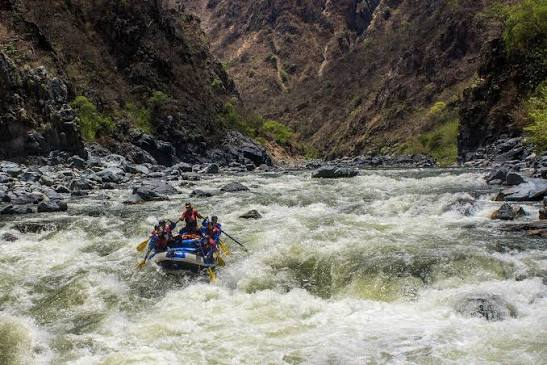
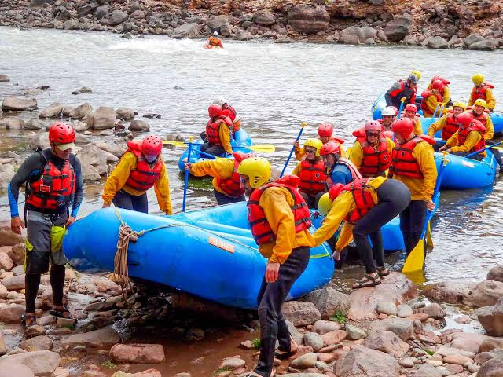
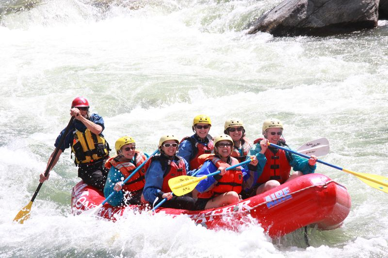
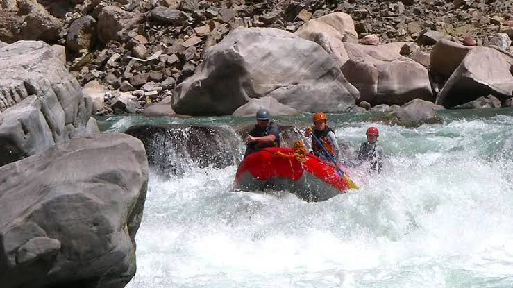

Apurímac River – Black Canyon
A remote, multi-day expedition through one of the deepest canyons on Earth. Big
Class IV-V rapids by day, riverside camping under the stars by night. Built for
experienced rafters chasing a true wilderness challenge.

Urubamba River – Chuquicahuana
A fast-paced half-day run through the Sacred Valley's Class III-IV rapids. The most
popular trip for intermediate rafters visiting Cusco, with stunning Andean scenery
the whole way down.

Colca Canyon
A full-day Class IV adventure through one of the world's deepest canyons near Arequipa.
Powerful rapids, dramatic canyon walls, and condor sightings make this a bucket-list
run.

Cotahuasi Canyon
The deepest canyon in the world and our most demanding trip: a multi-day, Class V
expedition for expert rafters only. Remote, technical, and unforgettable.